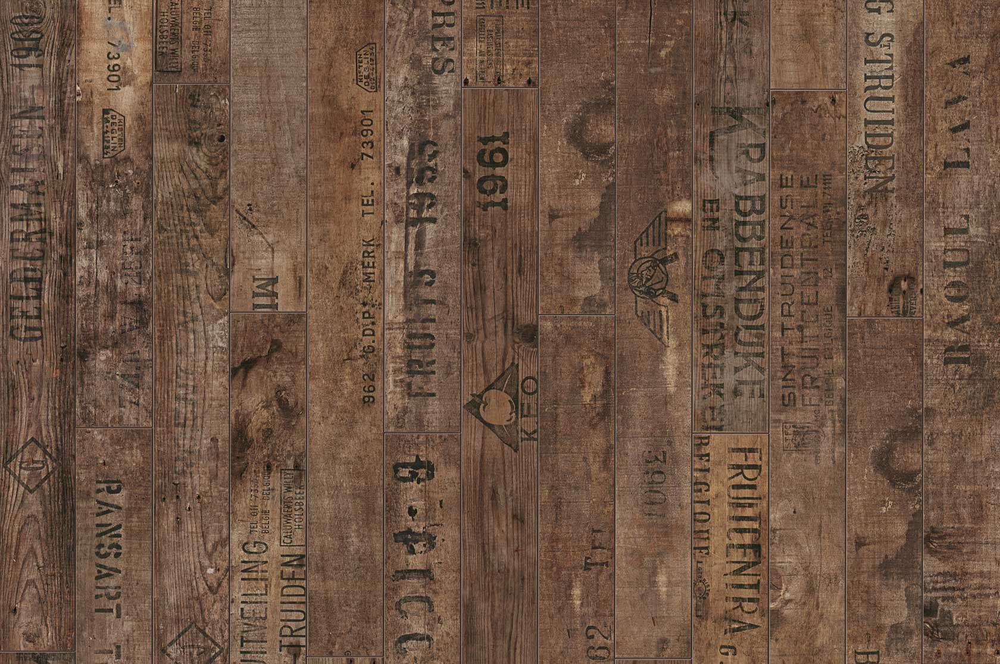

Laminatas, vinilinė danga ir parketlentės - pliusai ir minusai
 Palyginti (0)Neturite prekių palyginimui.
Informacija Akcijos Grindų ABC Mūsų parduotuvės Mano paskyra PrisijungtiGrindų Turgus
8 700 77780 I-V 10.00-18.00 VI 10.00-15.00 KONTAKTAI
0,00 €Jūsų krepšelis tuščias.
Pradžia Kilimai Grindų dangos Laminatas Parketlentės Vinilinės grindys Padengimo priemonės Lakas grindims Grindų lako priedas Gruntas Glaistai Alyvos Klijai Šlifavimo medžiagos Priežiūros priemonės Paklotai Grindjuostės Baltos grindjuostės Faneruotos grindjuostės MDF grindjuostės Metalinės grindjuostės Vinilinės grindjuostės Profiliai Įrankiai Akcijinės prekės Pradžia Kilimai Grindų dangos Laminatas Parketlentės Vinilinės grindys Padengimo priemonės Lakas grindims Grindų lako priedas Gruntas Glaistai Alyvos Klijai Šlifavimo medžiagos Priežiūros priemonės Paklotai Grindjuostės Baltos grindjuostės Faneruotos grindjuostės MDF grindjuostės Metalinės grindjuostės Vinilinės grindjuostės Profiliai Įrankiai Akcijinės prekės Pradžia Naujienos Grindys Laminatas, vinilinė danga ir parketlentės - pliusai ir minusaiProduct was successfully added to your shopping cart. Tęsti paiešką Pirkti
Laminatas, vinilinė danga ir parketlentės - pliusai ir minusai
Data 2020 vas. 7 | Kategorija Grindys , Grindų pasirinkimas | Įsirenginėdami namus, mes visi turime skirtingus reikalavimus jiems. Vieniems svarbus medžiagų tarnavimo laikas, kitiems – dizainas, taip yra ir su grindimis. Nėra vieningos nuomonės, kurios grindys geriausios, nes visi mes skirtingi, su skirtingais poreikiais. Todėl sukaupėme savo ilgalaikę patirtį ir žemiau pateikiame pagrindinių grindų tipų privalumus ir trūkumus, kad galėtumėte juos įvertinti bei išsirinkti labiausiai sau tinkančias grindis.
Laminuotos grindys (praktiškiausias pasirinkimas)
Pliusai:
Garantija taikoma ir konstrukcijai, ir dėvimam paviršiui. Galima rinktis iš įvairių naudojimo klasių (32, 33 ar 34 naudojimo klasės). Paprastas ir nebrangus įrengimas, klojimui nereikia profesionalo ; Tinka vandeniu šildomoms grindims, gerai praleidžia šilumą. Platus panaudojimas - tinka kloti virtuvės zonoje, prieškambaryje, o drėgmei atsparias kolekcijas net ir vonios kambaryje. Tokiu atveju, galima išvengti zonavimo, pvz. plytelių virtuvės zonoje. Esant reikalui dangą lengva pakeisti. Antistatiškas paviršius, nepritraukia dulkių, tokių grindų priežiūra ir valymas itin paprastas. Higieniškos dėl savo sandarių siūlių ir hermetiško paviršiaus.Minusai:
Nėra galimybės atnaujinti, šlifuoti paviršių. Kadangi gali būti klojamos tik plaukiojančiu būdu, girdimas žingsnių garsas. Tarp patalpų būtini kompensaciniai tarpai, kurios reikės uždengti slenktukais. Ribotas klojimas – maksimalus patalpos ilgis ir plotis – 13 m. Jei patalpa ilgesnė ar platesnė, turi būti daromas kompensacinis tarpas. Bijo pastovios drėgmės. Gana vėsus paviršius, gali būti nemalonu vaikščioti basomis. Negalimi užspaudimai sunkiais baldais ar technika.Vinilinės grindys (tarpinis variantas tarp laminato ir parketlenčių tiek komforto, tiek praktiškumo prasme)
Pliusai:
Garantija taikoma ir konstrukcijai (grindims su užraktu), ir dėvimam paviršiui. Galima rinktis iš įvairių naudojimo klasių (su užraktu galima rinktis 32 arba 33 atsparumo klasę). Platesnis panaudojimas – du konstrukcijų tipai – su užrakto sistema (galima kloti tiek plaukiojančiu būdu, tiek ir klijuoti prie pagrindo) ir tik klijuojamas; Klijuojant prie pagrindo nebijo užspaudimų sunkiais baldais. Tinka vandeniu šildomoms grindims - geriausias šilumos laidumas. Visiškai atsparios vandeniui; Minkštos ir gan šiltos, malonu vaikščioti basomis; Sugerianti žingsnių garsą danga. Neribotas klojimas - maksimalus patalpos ilgis ir plotis neribojamas. Nors danga ir sintetinė, tačiau sudėtyje neturi ftalatų ir formaldehidų.
Minusai:
Itin dideli reikalavimai pagrindo lygumui – visi didesni kaip 1 mm 20 cm atkarpoje nelygumai turi būti išlyginti, kaip ir visi didesni nei 2 mm nelygumai 1 m atkarpoje. Įrengimui reikia profesionalo. Nėra galimybės atnaujinti, paviršiaus negalima šlifuoti. Kadangi danga gan minkšta ir elastinga, galimi ilgalaikiai įspaudimai. Antistatiškai neapdirbtos, labiau kaupiasi purvas, nei turint laminuotas grindis.
Parketlentės (komfortiškiausias ir natūraliausias pasirinkimas)
Pliusai:
Medinė danga, visada vertinama dėl natūralumo. Galima kloti plaukiojančiu būdu arba klijuoti prie pagrindo. Tinka vandeniu šildomoms grindims. Klijuojant minimalus vaikščiojimo garsas. Šiltos, natūralios, malonu vaikščioti basomis. Klojant lengviausiai suvedamos su plytelėmis. Galima atnaujinti šlifuojant. Atnaujinant galima pasirinkti norimą padengimo būdą ir atspalvį.
Minusai:
Mažesnis atsparumas nusidėvėjimui. Garantija taikoma tik konstrukcijai, dėvimam paviršiui garantija netaikoma. Blogiausias šilumos laidumas, lyginant su laminuotomis ir vinilinėmis grindimis, tačiau vandeniu šildomoms grindims tikrai tinka. Daugeliu atveju brangesnė grindų danga nei laminuotos ar vinilinės grindys. Jautrios drėgmei ir jos pokyčiams. Klojant dažnai tenka dizainą derinti su plytelėmis ar kita danga.
Taigi, kuri grindų danga – laminatas, vinilinės grindys ar parketlentės - geriausiai atitinka Jūsų poreikius? Renkantis grindis teks nuspręsti ko Jūs norite – komforto, praktiškumo ar abiejų variantų viename. Pasirinkus laminatą džiaugsitės atsparumu įbrėžimams bei ypač natūraliai atrodančia grindų danga, vinilines grindis – lengva priežiūra bei atsparumu drėgmei, o jei susiklosite parketlentes - natūralios medienos šiluma, jaukumu.
Visa pateikta informacija yra apie mūsų parduodamas grindis, tad išdėstyti faktai nebūtinai tiks kitų gamintojų produkcijai. Pradėkite rinktis grindis jau dabar!
Kategorija: Grindys
5 auksinės taisyklės klojant vinilinę dangą ,,plaukiojančiu būdu“ BONA Spray Mop šluota Drėgmei atsparus laminatas - kaip įsitikinti? Grindų įrengimo būdai Ką reikia žinoti prieš dedant parketlentes? Komentarai išjungti. Žiūrėtos prekėsKilimas Osta BLOOM 160 x 230 cm
Informacija Prekių kategorijos Kilimai Laminatas Parketlentės Vinilinės grindys Padengimo priemonės Klijai Šlifavimo medžiagos Priežiūros priemonės Paklotai Grindjuostės Profiliai Įrankiai Išplėstinė paieška Informacija apie prekes: Kainoraščiai Įrengimo instrukcijos Informacija klientui Mano paskyra Užsakymų istorija Pirkimo taisyklės Atsiskaitymo būdai Grąžinimas ir garantija Įmonės informacija Apie mus Kontaktai Mūsų parduotuvės Karjera Privatumo poltika ©2017 Grinduturgus.lt. Visos teisės saugomos . Kad galėtume kokybiškai teikti paslaugas Jums, mes naudojame slapukus (cookie), kurie yra išsaugomi Jūsų kompiuteryje. Paspausdami SUTINKU, Jūs patvirtinate, kad esate informuotas apie slapukų naudojimą mūsų tinklalapyje. Atjungti slapukus Jūs galite savo naršyklės nustatymuose Sutinku Plačiau